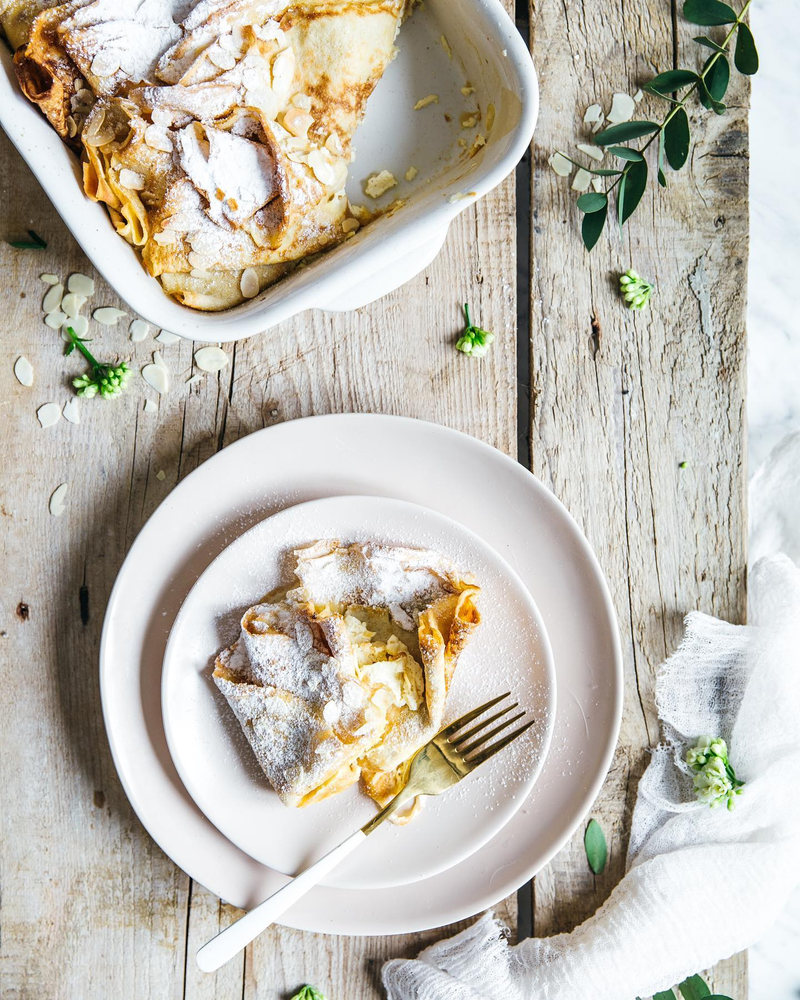

Zapekané palacinky s tvarohom podľa @lapetit.sk — Normy Jedál
Zapekané tvarohové palacinky ✨Môj tip na blížiaci sa víkend keby ste si chceli upiecť niečo dobré✨
Na palacinkové cesto budete potrebovať:
300 g hladkej múky
300 ml plnotučného mlieka
250 ml perlivej vody
50 g rozpusteného masla
3 vajcia
2 PL cukru
štipku soli
olej na vysmážanie
maslo na vymazanie formy
Na plnku:
500 g tučného hrudkovitého tvarohu
kôra z 1 citróna
4 PL práškového cukru
1 PL vanilkového cukru
75 g hrozienok namočených v rume
Na krém
2 žĺtka
150 g creme fraiche alebo smotany na šľahanie
150 ml mlieka
4 PL cukru
1 PL vanilkového cukru
Všetky suroviny na palacinky zmiešame na hladké cesto. Necháme ho aspoň 30 minút odpočinúť.
Potom palacinky osmažíme na troche oleja do zlata.
Tvaroh zmiešame s kôrou, cukrami a pridáme scedené hrozienka.
Vychladnuté palacinky potrieme tvarohom a buď zarolujeme alebo poskladáme na štvrtiny. Naukladáme do formy vymazanej maslom.
Nakoniec zmiešame suroviny na krém a palacinky ním polejeme. Dáme piecť do vyhriatej rúry na 170 stupňov a pečieme približne 25 minút do zlatista.
.
.
.
#zapekanepalacinky #zapekanepalacinkystvarohom #palacinky #palačinke #crêpes #bakersgonnabake #fallvibes #fallfoods #comfortfood #mojejedlo #dnespeciem #dnespecu #peceniejeradost #foodartblog #heresmyfood #topjedlo #foodilove #cozyvibes #foodgallery_cz #slovakblogger #foodblogger #eatcaptureshare #pancakeday #myfoodphotography #myfoodproject #dnespeciem #dnespecu #crêpes #dnespecu